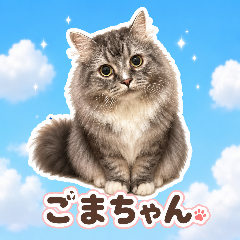
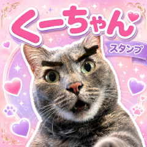

NO IMAGE
LINE STAMPS
LINEスタンプ
ゆるおりで作ったLINEスタンプをまとめています。 AIで制作したものと、自作・手作業で作ったものを分けて紹介しています。
自作スタンプ
自分で描いたり、手作業で調整したりして作ったスタンプです。 絵柄や文字の空気感を大事にしています。
AI制作スタンプ
AI画像生成を使って作ったスタンプです。 表情やポーズのバリエーションを出しやすいので、ネタ系・猫系と相性がいいです。


制作メモ
自作スタンプは、手描きの味や文字のノリを大事にして作っています。
AI制作のスタンプは、キャラの雰囲気や表情のバリエーションを活かして作っています。
どちらも「日常でちょっと使いたくなる」を目標にしています。